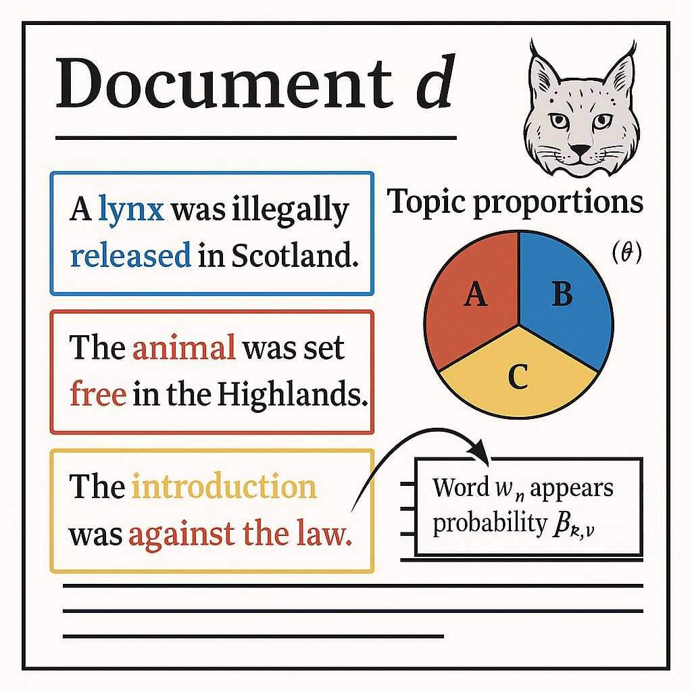
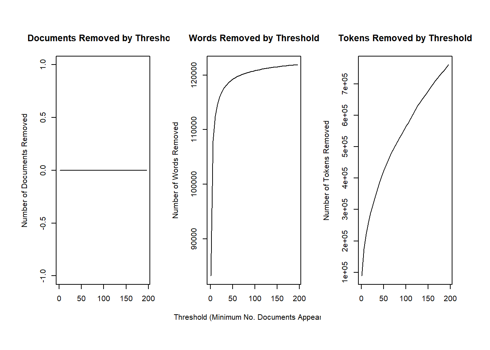

I’ve written this page especially for you and your honours project. I’ve aimed to keep it accessible, covering both the core theory behind the stats you’ll use (Structural Topic Models, STMs) but also how to actually implement them. That said, the theory can get complex at times, and I’m still learning it myself! (It’s also surprisingly hard to find good, clear explanations online.) It took me a while to make sense of the stats, so don’t worry if it takes some time. Be patient with yourself.
To be clear, this page isn’t meant to replace our meetings or turn me into a hands-off “supervisor.” It’s a resource you can return to whenever you need a refresher or some help getting unstuck.
Hopefully, this helps you get a handle on the method, but let me know if anything is confusing. It probably won’t answer every question, and I won’t be offended if you want to toss it in a bonfire. Just flag anything that’s unclear, and we’ll work through it together.
Why analyse text?
Let’s say we want to understand how movie reviews have changed over time. How would we do that?
“Well,” you might say, “maybe we could read thousands of reviews from the last 50 years and summarise them.” That’s technically possible but massively time-consuming. Even if we narrowed it down to the “best” reviews, we’d still face a huge pile of reading plus we’d now have the problem of how do you define which are the “best” reviews.
In fact, that’s exactly what many arts PhD students do: read hundreds (or thousands) of documents and distill them into themes. But I’d argue I’m not smart enough to do an arts PhD so instead, I’d like to cheat and let computers do the hard work for me.
But how do we cheat?
This is where your thesis steps into a murky (but exciting) space between statistics and machine learning.
One option is supervised learning. This is where you tell the model what it should learn. For example, in BI3010 you learned:
Here, the goal was to estimate $\beta_0$ and $\beta_1$. It’s supervised because we’ve defined the task: “Fit this straight line.”
Doing this with text means labelling each document manually. For example, marking them “Pro-Lynx” or “Anti-Lynx”, and then fitting a model. Doable? Yes. But incredibly time-intensive, and not much easier than just summarising the documents yourself.
The other option is unsupervised learning. Here, you don’t tell the model what to look for, you let it discover patterns on its own. The model identifies clusters or themes in the text, and your job afterward is simply to interpret those themes.
That’s way more manageable.
There are many ways to do this (Large Language Models like ChatGPT use similar ideas), but for your project, we’ll use a method called Structural Topic Modelling (STM).
What is a Structural Topic Model?
A Structural Topic Model (STM) is a type of analysis that allows us to explore large sets of text documents and identify what the common themes are; called topics. Just like you did in BI3010, you can also include covariates (also called explanatory variables) to see if that makes a topic may be more or less prevalent.
Grace, in your case, this might include things like how date (i.e. how has coverage of lynx changed over time), and if the illegal release of lynx (and maybe their interaction) may have changed which topics are more or less prevelant. For example, did negative topics become more common in the media after the illegal release compared to before?
STMs are a fairly complex beast, with lots of new ideas. One of these new ideas that I won’t explain in this document is Bayesian statistics. Luckily, I have written another set of documents that explain the general theory of this, which you are welcome and encouraged to read through. Although STMs, as implemented in the R package stm, use the Bayesian statistical framework, you can’t actually interact with it, so it’s not crucial to understand in this case. However, I would recommend trying to wrap your head around it, as it’s a piece of knowledge that may make you highly employable.
With that said, let’s go over, conceptually, what Structural Topic Models are going.
We begin by gathering a corpus. This is a collection of documents, like newspaper articles. Our objective is to learn something about the corpus.
We assume that within each document, there can exist multiple topics. Topics are the “themes” that the document covers; things like “Lynx are bad and we shouldn’t release them” or “Lynx are good and we should release them”.
These topics are latent, which means “hidden” or “unobserved” (newspapers don’t add a sticker on each article to say what the theme is afterall) and we want to use the STM to identify them and to see which are most prevalent.
We state how many theme we think there are. This might be 5 or it might be 200. This is a choice we make. (There are some tools that can help make this choice.)
Within each document we consider each word. We assume that each word is associated with one of these topics with differing probabilities. For example, if there is a topic for “Lynx are bad”, then we might expect that “livestock” has a 90% chance of belonging to this topic, while “rewilding” only has a 0.5% chance.
Each topic will have a distribution of words associated with it, each with their own probability to belong to that topic.
So our objective then, is to identify different topics, and which words tend to categorise those topics. This is what we’re, fundamentally, trying to do in an STM.
But how do they work?
By the conceptual description above, you may notice something. STMs have a hierarchical structure. At the top level is the document, within which we have topics, within which we have words.
The have data we have is document and words, and we use these to estimate topic.
This hierarchical structure is common in many of the more advanced statistical methods, especially in ecology. Occupancy models are a type of this, as a Cormack-Jolly-Seber models which estimate the survival indivudual animals. For your heritage, know the Cormack and Jolly worked in Aberdeen when they developed the method. That’s something to be super proud of! The CJS is such an important model in ecology that there are entire conferences dedicated to people using it.
What does an STM look like?
Let’s start with a simple way to visualise the data and output of an STM (apologies for the generative AI image):

The things to take away from this are to highlight that \(d\) is just the current document you are looking at. \(\theta_k\) describes the relative proportion of a document that is dedicated to topic \(k\) (e.g. in the above figure we have three topics, called A, B and C). These topics are determined by the word (\(w\), given all words \(n\) used in the document \(d\)) within them, that appears in the topic (\(k\)) with probability \(\beta\).
That’s the simplified version. If we dive into the details, things get a bit more complex.
The equations
We’ll go through this step-by-step because the estimation process in structural topic modeling is complex (but powerful).
1. Topic proportions
For each document \(d\) that we have, with covariates \(\vec{X}_d\), there is a corresponding vocabulary size of \(\vec{V}\), given \(K\) topics, we’re going to fit a GLM that uses a multivariate normal distribution to estimate which topic is present in a document (note that the \(\vec{}\) is shorthand for vector, or a column of data):
A multivariate normal distribution is like several normal distributions stacked together. So, instead of having just one mean and one variance, you have a mean and variance for each topic. The covariance matrix \(\Sigma\) (which is the variance) also tells you how topics tend to co-occur, for example, maybe “Lynx are bad” often appears alongside “Predator control”.
where \(\vec{X}_d\) is a 1-by-\(p\) vector (your covariates), \(\gamma\) is a \(p\)-by-(\(K-1\)) matrix of coefficients (this is a way to describe all the parameters, \(p\), in the model) and \(\boldsymbol{\Sigma}\) is a (\(K-1\))-by-(\(K-1\)) covariance matrix.
2. Topic-Word distributions
Assume you included a document-level content covariate \(y_d\) (e.g. Politically Left versus Politically Right newspaper), we can form a document-specific distribution of words (as a vector, or “column” of numbers), called \(\boldsymbol{\beta}\), which represents each topic (\(k\)) by using:
The baseline word distribution (\(m\), i.e. how common is this word across all documents),
The topic specific deviation \(\boldsymbol{\kappa}^{(t)}_k\) (i.e. is that word more or less common in topic \(k\))
The covariate group deviation \(\boldsymbol{\kappa}^{(c)}_{y_d}\) (i.e. is that word more or less common in Politically Left or Right newspapers),
And the interaction between the two \(\boldsymbol{\kappa}^{(i)}_{y_d,k}\) if we want one
Read this as saying “the probability, \(\beta\), to see a given unique word in document \(d\), in topic \(k\) is proportional to (the \(\propto\) symbol) how common it is in general, as well as how common it is in the given topic and/or group”
where \(\vec{\beta}_{d,k}\) is a vector that contains the probability to see a given unique word [the \(_{1,2,...,V}\) bit] in a topic (\(k\)), in a document (\(d\))).
Estimating \(\vec{\beta}_{d,k}\)
Keep in mind that \(\vec{\beta}_{d,k}\) should be a probability. But to figure it out we start by estimating the rate that at which we see each unique word (\(v\)) across the entire corpus in multiple Poisson GLM (one for each unique word):
Here, \(y_v\) is the observed count of word \(v\). Remember from BI3010 that a Poisson GLM estimates a rate but here we need a probability. To do that, we take the estimated rate (\(\lambda\)) for word \(v\) and divide it by the sum all of the \(\lambda\)s of all the other Poisson GLMs to get a probability (e.g. if we see the word lynx 100 times but we see a total of 500 words, then the probability to see the word lynx is \(\frac{100}{500} = 0.2 = 20\%\). We do this by:
A small note here. Normally you’d want to estimate this by using a multinomial GLM, which estimates the probability of an event happening - like seeing the word lynx - but when you have lots of different words. The problem occurs when you have hundreds of thousands of unique words. In that case a multinomial model can take far too long to fit. That’s why stm uses a Poisson model for each unique word which takes these rates and converts them to probabilities.
Estimating topic assignment and words
Now that we’ve estimated the topic proportions \(\vec{\theta}_d\) and the topic-word distributions \(\vec{\beta}_{d,k}\), we can now estimate the latent variables that explain how each word was chosen.
For each word in the document (which we can write as \(n \in \{1,...,N_d\}\), or “for each word that is in all words from the first to the last”) :
Estimate the topic by fitting a multinomial GLM, based on the probabilities in the vector \(\vec{\theta}_d\):
And that’s it. Suuuuuper simple, right? For transparency, I spent about three days going over material trying to make sense of the literature, in part because quantitative social scientists use very different terminology and a lot of the material I found glossed over the details, making it frustratingly hard to understand what an STM is actually doing. (But also a hell of a lot of fun).
Plate notation
If the above equations were too much, there’s another way to describe how the model works; more visual and less algebraic. It doesn’t given the nuts-and-bolts but it might help to give an intuition.
To do so, we can use plate notation. These are diagrams that describe how different parts of the model relate to each other.
Code
library(DiagrammeR)grViz("digraph stm { graph [layout = dot, rankdir = LR] # Nodes Σ [shape=circle, label='Σ', style=dashed] Γ [shape=circle, label='Γ', style=dashed] X [shape=circle, label='X'] κ [shape=circle, label='κ'] θ [shape=circle, label='θ', style=dashed] z [shape=circle, label='z', style=dashed] w [shape=circle, label='w'] β [shape=circle, label='β', style=dashed] # Edges Σ -> θ Γ -> θ X -> θ θ -> z z -> w β -> w κ -> β # Outer plate: D subgraph cluster_D { label = 'D' style = 'solid' X; θ; β; κ; # Nested plate: N subgraph cluster_N { label = 'N' style = 'solid' z; w; } }}")
Where:
Nodes: Circles represent variables. Dashed circles mean they are latent (a variable we have to estimate), while solid circles means they are observed data.
Plates: Rectangle indicate repetition:
\(D\): Each node is relevent for each document
\(N\): Each node is relevant for each word (and because \(N\) is within \(D\), also for each document)
And where the variables in the plate notation are:
\(X\) - Document level covariates (e.g. date of publication, political leaning)
\(\Gamma\) - Coefficients that determine how \(X\) affects topic proportions
\(\Sigma\) - The covariancematrix between topics (models topic co-occurence)
\(\theta\) - The estimated topic proportion (which sums to 1)
\(z\) - Estimated topic assignment for word \(n\) in document \(d\)
\(w\) - The actual observed word (e.g. lynx)
\(\beta\) - The estimated word distribution for topic \(k\)
\(\kappa\) - Document level content covariate (e.g. political group)
What’s in the box?
\(\beta\) is the topic-word matrix, of dimension \(\mathbf{K}\times \mathbf{V}\), where each row \(\beta_k\) is a probability distribution over the vocabulary (words) for topic \(k\) (each row in the \(\beta\) matrix below). \(\beta\) can be estimated from the data or modeled as a logit-linear function of content covariates.
For \(\beta\) it’s actually a topic-word matrix \(\beta\): \(\mathbf{K} \times \mathbf{V}\)
This is one of the better videos I found that explains STMs. It keeps things fairly light and doesn’t dive into the kind of details I included above, so have a watch to see if this helps things make sense.
Implementing STM
Now that we’ve covered the theory, let’s have a look at how we actually implement the method. To do so, I’ll make use of a dataset that contains text of political blogs from 2008 (when Obama and McCain were running for president of the USA). Have a look at the data because the data you collect will need to be stored in the same way.
Load Packages and Data
Code
library(stm)
stm v1.3.7 successfully loaded. See ?stm for help.
Papers, resources, and other materials at structuraltopicmodel.com
Code
library(tm)
Loading required package: NLP
Code
library(ggplot2)
Attaching package: 'ggplot2'
The following object is masked from 'package:NLP':
annotate
Code
# Load the datadata <-read.csv("data/poliblogs2008.csv", stringsAsFactors =FALSE)# Display just the first few rowshead(data, 5)
X
1 1
2 2
3 3
4 4
5 5
documents
1 After a week of false statements, lies, and dismissive apologies, Pakistani President Pervez Musharraf now says that he is disatisfied with the probe into former Prime Minister Benazir Bhutto's death and is asking Scotland Yard for help:"One should not give a statement that's 100 percent final. That's the flaw that we suffer from," Musharraf said at a news conference, noting that more evidence was emerging about the attack. "We needed more experience, maybe more forensic and technical experience that our people don't have. Therefore I thought Scotland Yard may be more helpful." Musharraf said he also reached out to British investigators for assistance to dispel accusations that Pakistan's military or intelligence services were involved. "We don't mind going to any extent, as nobody is involved from the government or agency side," he said. Speaking a week after Bhutto's assassination in a shooting and suicide bombing, Musharraf denied there had been a security lapse and implied that Bhutto, who was greeting supporters through the sunroof of her armored vehicle at the time of the attack, was partly responsible. "Who is to be blamed for her coming out (of) her vehicle?" he asked, adding that others in the vehicle had not been hurt in the attack.When in doubt, blame the victim.Reports in the immediate aftermath of the bombing said that as far back as November, Bhutto believed Musharraf was deliberately withholding security forces that could have made her safer. Unless he feared Bhutto more than the street riotors, I doubt whether that was really true. More likely, he didn't trust the army to protect her. And when she requested that Musharraf allow her to use western private security firms, he refused.I don't think Musharraf wanted Bhutto dead. But I think he is just too weak and indecisive to have done what was needed to protect her.
2 I honestly don't know how either party's caucus results will play out tonight. Usually, you can get a good idea of perhaps not a winner but at least you can figure out who's up, who's down, and who's on life support.Not with the Iowa Caucuses. Races in both parties are just too close to call. So many variables. So much volatility among the voters. And the polls are whacky.As an example, here are the final two polls out on Iowa. First, ARG:Mike Huckabee 29% (23%) Mitt Romney 24% (32%) Fred Thompson 13% (7%) John McCain 11% (11%) Rudy Giuliani 8% (6%) Ron Paul 6% (6%) Duncan Hunter 4% (2%) Undecided 4% (11%) (Number in parentheses is from ARG survey taken last week)The spread between Huckabee and Romney is the margin of error which means they are virtually tied. Note Thompson's huge bump. Is he surging? Many think so although he probably doesn't have enough juice to catch either front runner for second place. But a strong third sends him along the campaign trail - despite what you might have heard about him dropping out. (Fred and his staff are denying the filthy rumor every chance they get.)Meanwhile, Zogby's daily tracking poll (three day rolling average) tells a little different story:* Huckabee - 31%* Romney - 25%* Thompson - 11%*McCain -10%Here the Huckster opens up a slight lead on Romney with Thompson and McCain far back in the pack.On the Democratic side, Obama has sprinted into the lead:Democrat Barack Obama continued his upward momentum through the evening before the Iowa caucuses, capturing the lead ahead of rivals John Edwards and Hillary Clinton.. Meanwhile, Republican Mike Hucakbee widened his lead over Mitt Romney down the stretch, the newest and last Reuters/C–SPAN/Zogby daily telephone tracking poll in Iowa shows. Obama broke through the 30% barrier for the first time, gaining 31% support after another strong day leading up to the caucuses. But more dramatic was Clinton’s four-point drop in this last day of tracking. Edwards moved into second place by himself after another day where he steadily gained ground. This fifth and final daily tracking poll was conducted using live telephone operators in the Zogby call center in Upstate New York. Edwards finished this Zogby daily tracking in Iowa in the same place as four years ago, when Zogby correctly identified the finishing order of the candidates in that caucus.Hillary Clinton has been playing down her chances the last 48 hours and could very well finish 3rd.All of this matters little in the end. The process of caucusing is complicated for the Democrats and it is possible for any of the top three candidates to win or come in third.We'll see by midnight tonight central time.
3 While we stand in awe of the willingness of our troops in Iraq to sacrifice themselves for the Nation, the fewer that are required to do so, the better. And the news on that front is good. As can be seen in the chart below, our military deaths in December dropped to 23 from 37 in November. December deaths are down over 80% (82%) from May's peak this year of 126. Assuming this reflects a permanent change in the correlation of forces in Iraq - and it is likely that it does, although we cannot be certain of it - it reflects a tremendous achievement on the part of General Petraeus, since this is the result not of retreating from our objectives in Iraq but of advancing toward them - of executing the mission.What of Iraqi deaths? Iraqi security forces and civilian fatalities are also down in December from November. Iraqi deaths are down only by a small amount - from 560 in November to 534 in December, although that difference is not small if you are one of the ones who are now still alive. And the decline from this year's peak in February of 3,014 is a drop of 82%(!).Are we out of the woods in Iraq? It would seem not. We have General Odierno's estremely disturbing cri de coeur at the end of November, which we can assume was endorsed by his chief, General Petraeus. So far as we know, General Odierno's point "A window of opportunity has opened for the government to reach out to its former foes, said Army Lt. Gen. Raymond T. Odierno, the commander of day-to-day U.S. military operations in Iraq, but ‘it's unclear how long that window is going to be open.'"has not been resolved. While some economic indicators, such as the Iraq Stock Exchange and the value of the Iraqi dinar, are showing real strength, the status of the estimated 4 million internal and external refugees remains open, as does the high unemployment rate, estimated at over 40%. But the fatalities figures are good news on the war-fighting front and we don't want to miss them. Success doesn't always announce itself. It's important not to miss it when it is achieved.
4 These pages recently said goodbye to global warming. Ironically, the current spell of global warming, such as it is, can be expected to end just as the Kyoto treaty ends in 2012, but having nothing to do with reduced emissions from fossil fuels. For the remainder of this century, it will be global cooling we'll have to worry about, according to highly credentialed Russian scientist, Dr. Oleg Sorokhtin.Dr. Sorokhtin, Merited Scientist of Russia and fellow of the Russian Academy of Natural Sciences, is staff researcher of the Oceanology Institute. He explains the recent warming as a natural trend."Earth is now at the peak of one of its passing warm spells. It started in the 17th century when there was no industrial influence on the climate to speak of and no such thing as the hothouse effect. The current warming is evidently a natural process and utterly independent of hothouse gases."So what will happen in the future?"Astrophysics knows two solar activity cycles, of 11 and 200 years. Both are caused by changes in the radius and area of the irradiating solar surface. The latest data, obtained by Habibullah Abdusamatov, head of the Pulkovo Observatory space research laboratory, say that Earth has passed the peak of its warmer period, and a fairly cold spell will set in quite soon, by 2012. Real cold will come when solar activity reaches its minimum, by 2041, and will last for 50-60 years or even longer."Physical and mathematical calculations predict a new Ice Age. It will come in 100,000 years, at the earliest, and will be much worse than the previous. Europe will be ice-bound, with glaciers reaching south of Moscow."The high standing of Dr. Sorkhtin and the inherent plausibility of his argument that climate will continue to follow the same basic causal factor, solar activity, make this another heavy blow to the heavy breathing of the global warming alarmists, who insist there is no argument at all.
5 A US report shows how the enemy controlled the information on the battlefield in Fallujah and used this to force the US and Iraqi forces out, in the first battle there. The Belmont Club points out UPI coverage of the report by Shaun Waterman. Here is how the enemy worked: First they kidnapped reporters from major Western news sources, driving them out of the city, and leaving only Al Jazeera, Al Arabiya and local stringers controlled by the enemy as the sole sources of news. When the US returned with many embedded journalists and cut the enemy's information monopoly we won.These figures demonstrate how the insurgency purposely drove the press from the field to recreate the information monopoly they found so advantageous in the opening days of the First Fallujah, when only journalists from Al Jazeera and Al Arabiya were reporting from the scene. The kidnapping campaign compelled news outlets to rely on stringers who could then be controlled by the insurgency and who could be counted on to miraculously stumble on photo opportunities showing insurgents in action, such as the Pulitzer Prize winning photograph of an Iraqi election worker being killed on Haifa Street. The effective riposte again turned out to be finding ways to break the reportorial stranglehold the enemy had established. The information blockade runners turned out to be bloggers and journalists embedded in the military, of whom Michael Yon is perhaps the most famous. The Iraqi bloggers were protected by their anonymity and the embedded journalists were protected by coalition troops. These reporters outflanked the wall of "access journalism" which was gradually restricting the majors and created alternative sources of reportage. Although few in number these blockade runners played a pivotal role in penetrating the "bodyguard of lies" with which al-Qaeda and the Sunni insurgency had surrounded itself.
docname rating day blog
1 at0800300_1.text Conservative 3 at
2 at0800300_2.text Conservative 3 at
3 at0800300_3.text Conservative 3 at
4 at0800300_4.text Conservative 3 at
5 at0800300_5.text Conservative 3 at
Preprocess Text
The first important stage in the analysis, before we get to the modelling, is to process the text. There’s apparently a lot of debate in the social sciences over whether or not to do some of these steps. I won’t lie. I’m no expert so I can’t give any meaningful advice here, other than to do some of your own research and decide what you want to do.
Imagine we have this sentence:
A lynx was released today in Edinburgh. Locals are said to have fed it Whiskers cat food and offered it some buckfast.
After text processing, this becomes:
lynxwasreleasedtodayinedinburgh
localsare said to havefeditwhiskerscatfoodandofferedit somebuckfast
plotRemoved(processed$documents, lower.thresh =seq(1, 200, by =100))

Choosing K (Number of Topics)
Code
# searchK(docs, vocab, K = c(10, 15, 20, 25), data = meta)
Expectation-Maximiation equivalent to brute forcing MCMC - give it a function and iteratively optimise it until threshold of error reached. Priors locked (I think)